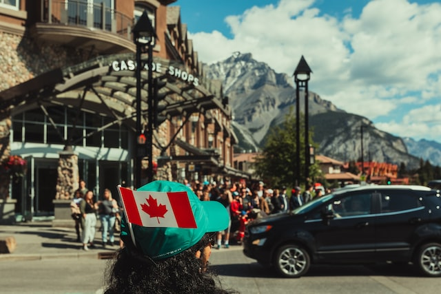

<!-- Página web sobre las Cataratas del Niagara (Canadá - EEUU) -->

<!DOCTYPE html>
<!-- Lenguaje de la página -->
<html lang="es"></html>
<html>
<head>
  <!-- Codificación de la página -->
  <meta charset="UTF-8">
  <!-- Título de la página -->
	<title>Las grandiosas Cataratas del Niagara</title>
  <!-- Estilos de la página (Referencia al archivo css de estilos para la página) -->
	<link rel="stylesheet" type="text/css" href="estilos.css"> <!-- Referencia al archivo css de estilos para la página -->
  <!-- Importar iconos de Font Awesome -->
  <link rel="stylesheet" href="https://use.fontawesome.com/releases/v5.8.1/css/all.css" integrity="sha384-50oBUHEmvpQ+1lW4y57PTFmhCaXp0ML5d60M1M7uH2+nqUivzIebhndOJK28anvf" crossorigin="anonymous"> <!-- Referencia a los iconos de Font Awesome (Se usa más que todo para no crear iconos muy complejos con spans)-->
</head>
<!-- Cuerpo de la página -->
<body>

  <!-- Vinculo para volver al tope de la página -->
  <div id="top"></div>

  <input type="checkbox" id="menu-desplegable" class="menu-desplegable-check"> <!-- Crear checkbox para menú desplegable -->

  <!-- Crear icono del menú desplegable para pantallas pequeñas -->
  <a id="menu-icon">
    <span></span>
    <span></span>
    <span></span>
  </a>

  <!-- Crear menú desplegable para pantallas pequeñas -->
  <nav id="menu-desplegable">
    <ul>
      <li><a href="Ubicacion.html">Ubicación</a><br></li>
      <li><a href="Personajes que lo habitan.html">Personajes que lo habitan</a><br></li>
      <li><a href="Actividades.html">Actividades</a><br></li>
      <li><a href="Historia.html">Historia</a><br></li>
      <li><a href="Referencias.html">Referencias</a><br></li>
      <li><a href="Index.html">Pág. Principal</a><br></li><!-- Crear flecha para volver al tope de la página -->
      <a href="#top" class="top"><i class="fas fa-arrow-up"></i></a>
    </ul>
  </nav>

  <!-- Top de la página (Título contenido en un frame) -->
  <div class="Titulo">
    <header class="Titulo1">
        <h1>Las grandiosas <br>Cataratas del Niagara</h1>
        <h2>Un lugar donde se puede <br>apreciar la majestuosidad de la naturaleza</h>
    </header>
  </div>

  <section>
    <div class="Botones">
      <!-- Botones de navegación -->
      <!-- Cada botón redirecciona a una página diferente -->
      <button class="button" onclick="window.location.href='Ubicacion.html'">Ubicación</button>
      <button class="button" onclick="window.location.href='Personajes que lo habitan.html'">Personajes que lo habitan</button>
      <button class="button" onclick="window.location.href='Actividades.html'">Actividades</button>
      <button class="button" onclick="window.location.href='Historia.html'">Historia</button>
      <button class="button" onclick="window.location.href='Referencias.html'">Referencias</button>
      <button class="button" onclick="window.location.href='Index.html'">Pág. Principal</button>
    </div>
  </section>
  
  <h1>Te invitamos a conocer acerca de la gente que frecuenta las Cataratas del Niagara</h1>
  <hr>
  <h2 class="NOTA"><span style="color: rgb(0, 110, 255)">Canadá y sus habitantes</span></h2>
  <hr>
  <p class="Texto">Canadá es un país vasto y diverso ubicado en la parte norte de América, limitando al oeste con el Océano Pacífico y al este con el Océano Atlántico, mientras que al sur limita con Estados Unidos y al norte con el Océano Ártico. Con 9.9 millones de kilómetros cuadrados, es el segundo país más grande del mundo después de Rusia y cuenta con la línea costera más larga del mundo, con 243,000 kilómetros. A pesar de su gran tamaño, Canadá es escasamente poblado, con solo cuatro personas por kilómetro cuadrado, lo que lo convierte en un destino ideal para aquellos que buscan espacio y tranquilidad. Además, Canadá es conocido por producir el 70% de la miel de maple del mundo y es el mejor lugar para ver auroras boreales.<br>Toronto es la ciudad más grande de Canadá, seguida de Vancouver, Montreal y Calgary. Con una población de 36 millones de habitantes, la mayoría de los canadienses viven cerca de la frontera con Estados Unidos. A pesar de ser un país escasamente poblado, Canadá es conocido por su diversidad cultural y su compromiso con la tolerancia y la inclusión.</p>
  </section>
    <!-- Contenido de la página -->
    <table class="Tabla_personajes">
        <div class="Contenido_personajes">
            <tr>
                <!-- Imagenen 1 para la primer fila y primer columna -->
                <td>
                    <figure class="Canadienses">
                        </a>
                        <figcaption><span style="color: rgb(0, 110, 255)"><b>Imagen representativa de la población Canadiense</b></span></figcaption>
                    </figure>
                </td>
                <!-- Texto referente a la primer imagen-->
                <td>
                    <p class="Texto">Los canadienses son los habitantes de Canadá, un país ubicado en América del Norte. La población de Canadá es multicultural y diversa, con una mezcla de culturas y etnias que incluyen descendientes de británicos, franceses, indígenas, asiáticos, africanos y de muchos otros orígenes. Los canadienses se enorgullecen de su diversidad y de sus valores de tolerancia y respeto hacia los demás. También valoran su alto nivel de vida, la educación y los servicios de atención médica gratuitos o de bajo costo que están disponibles para todos los ciudadanos.<br>El idioma oficial de Canadá es el inglés y el francés, aunque también hay muchas personas que hablan otros idiomas, especialmente en las grandes ciudades. Los canadienses son conocidos por ser amables, educados y acogedores, y se enorgullecen de su país y su patrimonio natural.</p>
                </td>
            <tr>
                <td>
                    <!-- Imagenen 2 para la primer fila y segunda columna -->
                    <figure class="Americanos">
                        </a>
                        <figcaption><span style="color: rgb(0, 110, 255)"><b>Imagen representativa de la población Americana</b></span></figcaption>
                </td>
                <td>
                    <!-- Texto referente a la segunda imagen-->
                    <p class="Texto">Los Americanos son los encargados de la parte de las Cataratas que se encuentran en la frontera de su territorio, Estados Unidos es un país muy grande y multicultural, con una población de más de 328 millones de personas. Sin embargo, podemos destacar algunas características generales que se pueden mencionar sobre los estadounidenses. En primer lugar, muchas personas en Estados Unidos valoran la libertad individual y la independencia. También hay una gran importancia dada al trabajo y al éxito financiero.<br>En cuanto a la diversidad cultural, Estados Unidos es conocido por ser un crisol de diferentes culturas y etnias. Hay personas de todos los orígenes étnicos y religiosos, y muchos hablan más de un idioma. También hay una gran diversidad en términos de creencias políticas y sociales.
                    </p>
                </td>
            </tr>
        </div>
    </table>
	</section>
  <p class="Texto">En los Estados Unidos, la población se compone de personas de diversas etnias y orígenes, lo que resulta en una sociedad multicultural. En 2021, la población estimada del país era de aproximadamente 332 millones de personas. El 51% de la población eran mujeres, y el 49% eran hombres. La edad mediana de la población era de 38 años, con un 22% de la población por debajo de los 18 años y un 16% por encima de los 65 años.<br>El territorio estadounidense es vasto y diverso, con una gran variedad de paisajes naturales. El país cuenta con numerosos parques nacionales y estatales, así como también numerosas ciudades importantes. La ciudad de Nueva York, en la costa este del país, es la ciudad más grande en términos de población, mientras que Los Ángeles, en la costa oeste, es la segunda ciudad más grande. La economía estadounidense es la más grande del mundo, impulsada por diversos sectores como la tecnología, la energía, la agricultura y el turismo. El país es también conocido por su cultura popular, incluyendo el cine de Hollywood, la música pop y la comida rápida.</p>
  <hr>
  
  <!-- Crear flecha para volver al tope de la página -->
  <a href="#top" class="top"><i class="fas fa-arrow-up"></i></a>

	<footer class="Footer">
		<p>Creado por: Jeferson Yesid Gonzalez Ortiz | Cod: 319019 | jegonzalezor@unal.edu.co | Curso: Gráfica Interactiva | Universidad Nacional de Colombia sede Palmira | Derechos reservados &copy; 2023</p>
	</footer>
</body>
</html>
